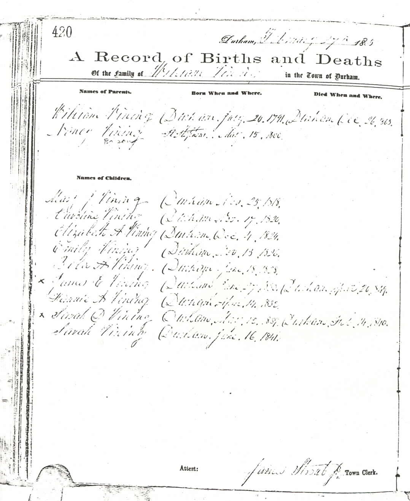
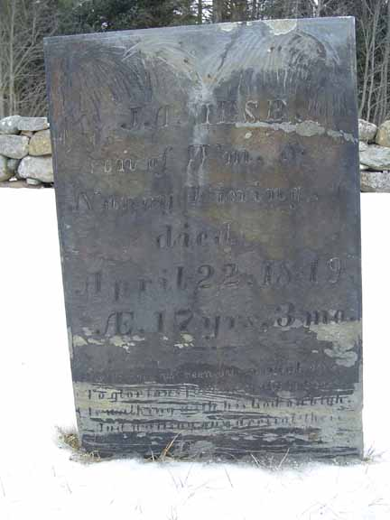
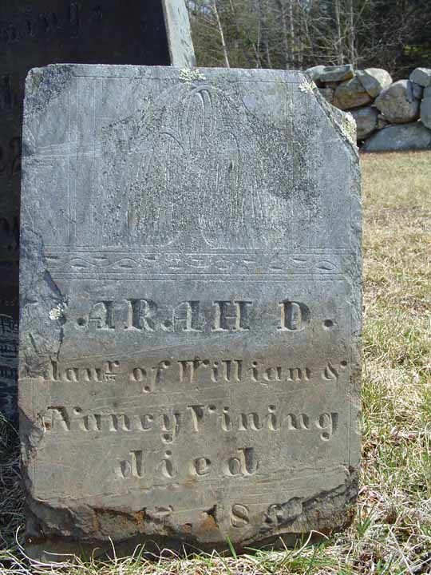

Family Data
The town of Durham, Androscoggin County, Maine, has photocopied its vital record books, and those photocopies are available for public viewing. Unfortunately, much of the photocopied material is very difficult to impossible to read. Below are (1) the page (greatly enlarged) that reports the family of William Vining and Nancy Ragoon and (2) an image of the gravestone of James E. Vining. All the information on the vital record page appears to have been entered at the same time (27 February 1865) by James Strout Jr., the town clerk, and covered events that occurred from about 15 to almost 75 years earlier. Note the contradictory information about the death date for James E. Vining (20 April in Durham's vital records and 22 April on his gravestone shown at the bottom of this page).
Census Data
| 1820 | 1830 | 1840 | 1850 | 1860 | 1870 | |
| William Vining | ? | ? | ? | 58 | 63 | dead |
| Nancy (Ragoon) Vining | ? | ? | ? | 52 | 60 | ? |
| Mary Jane Vining | ? | ? | ? | living in separate household | ||
| Caroline Vining | ? | ? | ? | [living? in separate household] | ||
| Elizabeth A. Vining | ? | ? | [living? in separate household] | |||
| Emily Vining | ? | ? | 22 | 30 | ? | |
| Bela A. Vining | ? | ? | 20 | 29 | ? | |
| James E. Vining | ? | ? | dead | |||
| Frances A. "Fannie" Vining | ? | 16 | [living? in separate household] | |||
| Sarah D. Vining | dead | |||||
| Sarah Vining | 8 | 19 | ? |


Death Data
Gravestones for James E. Vining and Sarah D. Vining, children of William Vining and Nancy (Ragoon) Vining, in Sawyer Cemetery, Durham, Androscoggin County, Maine:
